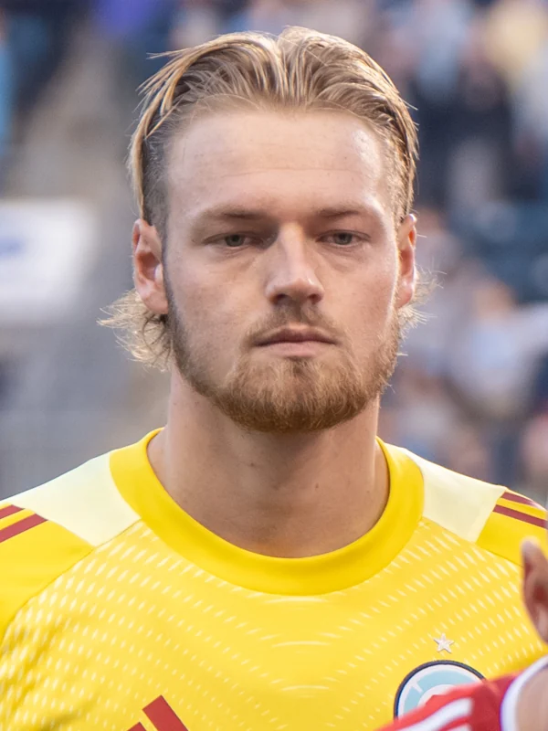

Real photographs, clearly labeled artwork, and a source trail you can follow.
Source snapshot: October 6, 2026 · Pacific time
FACTRoster, status and totals from dated sources.ANALYSISOur football reading and viewing questions.PROJECTIONA watchlist, never a promised selection.
Faces with a date.
A photograph shows one moment. Its shirt is historical context, not evidence of a player’s current club or selection. These photographs are used for independent fan editorial coverage, without implying endorsement.

Chris Brady
Photographed 2025-10-26. Bryan Berlin / WikiPortraits / Wikimedia Commons.
Resized and converted to WebP; responsive display may crop. Original source crop retained where present.
WebP derivatives of CC BY-SA 4.0 photographs are also offered under CC BY-SA 4.0. No changes to faces or clothing were made.
The archive stays personal.
Gordon’s existing photographs and captions retain their personal context. Seven display copies were turned upright; the originals remain in the archive. Personal captions are the author’s recollections, not independent match verification.
Commissioned game and story art is illustration, not documentary photography. Artwork register. Tactical pitch drawings are editorial illustrations, not tracking data or a confirmed lineup.
Source credits for five legacy venue photographs are not recorded in the existing repository: Azteca, Levi’s, Lumen, Olimpico and SoFi. They remain marked for source reconciliation; no new license is claimed.


.jpg){kind=link}


.jpg){kind=link}